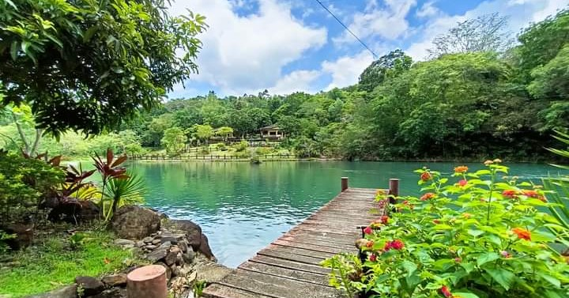

Welcome to Mambukal
Mambukal Resort is a popular mountain resort located at the foot of Mount Kanlaon in Murcia, Negros Occidental, Philippines. Known for its natural hot springs, scenic waterfalls, and lush forest surroundings, Mambukal offers a perfect blend of relaxation and adventure. The resort features seven waterfalls, which can be explored through a challenging hike, as well as a sulfur spring bath where visitors can enjoy the therapeutic effects of the geothermal waters. The area is also home to a rich variety of flora and fauna, including a bat sanctuary. Mambukal's serene atmosphere and cool mountain climate make it a top destination for nature lovers and those seeking a peaceful retreat.
